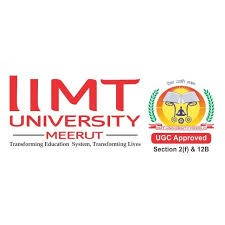
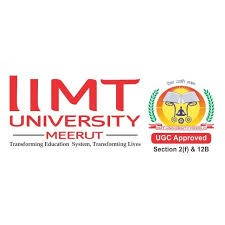
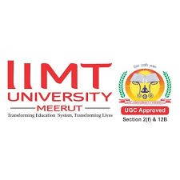

IIMT University is a private university situated in Meerut, West U.P. (Uttar Pradesh), North India. Established in 2016, IIMT University has created a student-centric environment with strong academics, innovative teaching, research, and student-focused infrastructure.
| Type | Private University |
|---|---|
| Established | 2016 |
| Chairman | Shri Yogesh Mohanji Gupta |
| Director | Mayank Agarwal |
| Location | Meerut, Western Uttar Pradesh, NCR, India |
| Campus | Urban, 100 acres |
| Website | iimtu.edu.in |

IIMT University also has a hospital named Life Line Hospital, central and personal libraries, two cafeterias, a large sports ground, and multiple academic blocks (A-G). For more details, see School/Colleges.